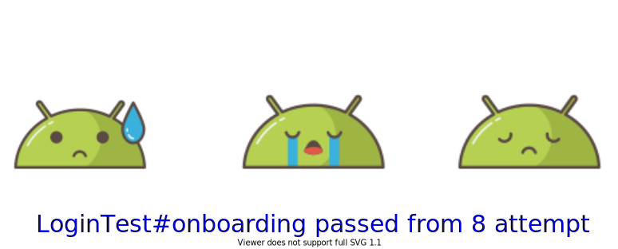

Flakiness

Flakiness it's an unstable behavior of particular test. If you execute this test N times, it won't pass N/N. Or, it
can pass only locally, but always or often failed on the CI.
It's the most frustrating problem in instrumented testing, which requires a lot of time from engineers to fight.
Reason
- Production code
Example: async operations, race-conditions - Test code
Example: testing toasts/snack-bars - A real device or Emulator
Example: Disk/Battery/Processor/Memory issues or notification has shown on the device - Infrastructure
Example: Processor/Disk/Memory issues
It's not possible to fight flakiness on 100% if your codebase changes every day (including the new sources of flakiness)
However, it's possible to reduce it and achieve good percentage of flakiness free.
In general, to reduce flakiness you need to choose tools like framework for writing, test runner and emulator properly
Flakiness protection
1. Wait for the content appearing
- When we have an http request or other asynchronous operation, it's not possible to predict how soon our expected
content will be shown on the screen.
By default, Espresso framework will fail assertion if there is no expected content in a particular time. Google provided Idling Resources to catch asynchronous operations. However, this goes against the common testing best practice of not putting testing code inside your application code and also requires an additional effort from engineers. Recommended by community way it's to use smart-waiting (aka flaky safely algorithm) like this :fun <T> invokeFlakySafely( params: FlakySafetyParams, failureMessage: String? = null, action: () -> T ): T { var cachedError: Throwable val startTime = System.currentTimeMillis() do { try { return action.invoke() } catch (error: Throwable) { if (error.isAllowed(params.allowedExceptions)) { cachedError = error lock.withLock { Timer().schedule(params.intervalMs) { lock.withLock { condition.signalAll() } } condition.await() } } else { throw error } } } while (System.currentTimeMillis() - startTime <= params.timeoutMs) throw cachedError.withMessage(failureMessage) } - This is an internals of the Kaspresso library
- Official documentation says that it's not a good way to handle this, because of an additional consuming of CPU resources. However, it's a pragmatic trade-off which speed ui testing writing up and relieves engineers from thinking about this problem at all.
- Some frameworks have already implemented solution, which intercepts all assertions:
-
Consider using them to avoid this problem at all.
2. Use isolated environment for each test
- Package clear before each test will all your data in application and process itself. This will get rid of the likelihood affection old data to your current test. Marathon and Avito-Test runner provide the easiest way to clear the state.
- You can see the details here: State Clearing
3. Test vanishing content in other way (Toasts, Snackbars, etc)
- Testing the content which is going to be hidden after N time (usually ms) it's also challenging. Toast might be shown properly, but your test framework is checking other content on the screen at the particular moment. When this check is done, toast might have already been disappeared, your test will be failed.
- To solve this, you may not to test it at all. Or, you can have some proxy object which saves a fact that Toast/SnackBar has been shown. This solution has already been implemented by Avito company, you may check the details here
- If you have own designed component, which is also disappears after some time, you can disable this disparity for tests and close it manually.
4. Use special configuration for your device
- In the most of the cases you don't to have Accelerometer, Audio input/output, Play Store, Sensors and Gyroscope in your tests. You can see how to disable them here: Emulator setup
- Also, it's recommended way to disable animations on the device, screen-off timeout and long press timeout. The script
below will patch all your devices connected to
adbdevices=$(adb devices -l | sed '1d' | sed '$d' | awk '{print $1}') for d in $devices; do adb -s "$d" shell "settings put global window_animation_scale 0.0" adb -s "$d" shell "settings put global transition_animation_scale 0.0" adb -s "$d" shell "settings put global animator_duration_scale 0.0" adb -s "$d" shell "settings put secure spell_checker_enabled 0" adb -s "$d" shell "settings put secure show_ime_with_hard_keyboard 1" adb -s "$d" shell "settings put system screen_off_timeout 2147483647" adb -s "$d" shell "settings put secure long_press_timeout 1500" adb -s "$d" shell "settings put global hidden_api_policy_pre_p_apps 1" adb -s "$d" shell "settings put global hidden_api_policy_p_apps 1" adb -s "$d" shell "settings put global hidden_api_policy 1" done
5. Use fresh emulator instance each test batch
- Your tests may affect your emulator work, like save some information in the external storage, which can be a reason of
flakiness. It's not pragmatic to run a new emulator for each test in terms of speed, however you can do it each batch.
Just kill emulators when all of your tests finished.
You can see how to disable them here: Emulator setup
6. Mock your network layer
- In 2021, it's still not possible to have stable network connection. To achieve stability, it's better to mock it. Yes, after that our test is not fully end-to-end, but it's a pragmatic trade-off. You can read more about it here: Network
7. Close system tray notifications before each test
- This problem may appear if some of your tests for some reasons didn't close the system notification tray. All of the
next tests will be failed because of this.
To prevent such case, you can write a test rule which will close such notification before each test :class CloseNotificationsRule : ExternalResource() { override fun before() { UiDevice .getInstance(InstrumentationRegistry.getInstrumentation()) .pressHome() } }
8. Use retries
- Retry it's a last of flakiness protection layer. It's better to delegate it to test runner instead of custom test
rule, as our test process might be crashed during the test execution. If test passed as minimum once, we consider it as
passed.
It's recommended by the community way to always have as minimum as one retry. As we showed before, it's not possible to fight flakiness in 100%, if your codebase changes really often. You also may have 100% flakiness free if you use only one device, but you might have some problems if you run your tests across multiple devices because them consume more resources.
Usually tests are flaky in a not really convenient way. If you have UI tests as a part of CD, your release will be automatically blocked because of it. Do not avoid retries. Try to reduce them and always check, why test has been retried.
You can read more about retries and flakiness strategies here: Test runners
9. Avoid bottlenecks
- Imagine you have a test which navigates to your feature throughout
MainScreen.MainScreenit's a bottleneck, because a lot of teams can be contributing in there.
Try to open your particular feature directly in your tests. You can do it viaActivityScenario, or by using the same components as using in deeplink processing, or by using custom created navigation component.
However, leave as minimum as 1 test, which checks that your feature can be opened fromMainScreen
10. Sort your tests
- It also can be a reason of flakiness, if you run your tests across multiple devices.
Especially, when you run test with different execution time in parallel. Whiletest1is running,test2, test3, test4can be finished. Test runners like Marathon/Avito will pull the device data after that, which can create artificially created delay, which can be a reason oftest1failing.
Sorting test by execution time based on a previous run will reduce the count of issues like this.
11. Use the same emulator configuration locally and on the CI
- Test can work fine in one device, however it can be failed on another device. Try to use an emulator with the same configuration as on CI locally.
- You also can add some checks, which prohibit to run instrumented tests locally not on the same emulator as on CI.
devices=$(adb devices -l | sed '1d' | sed '$d' | awk '{print $1}') for d in $devices; do device_version=$(adb -s "$d" shell getprop ro.build.version.sdk) emulator_name=$(adb -s "$d" shell getprop ro.kernel.qemu.avd_name) if [ "$emulator_name" != $ANDROID_ALLOWED_EMULATOR_29 ]; then throw_error "One of connected to adb devices not supported to run UI tests, please disconnect them and run emulator, using: ./runEmulator.sh" fi if [ "$device_version" != 29 ]; then throw_error "Please, use emulator with sdk 29 as the same version uses on verification on CI. To create emulator, use: ./runEmulator --ui-test" fi done
12. Use the same test runner locally and on the CI
- Your test launch on CI and locally shouldn't be different. If you use 3rd party test runner on CI, use it to run your tests locally as well
13. Collect and observe flakiness information
- Always monitor flakiness percentage to reduce them and try to automate it. Marathon provides an information about
retries it's done during the test run in a report meta-files in json format. Using them, you can create a Slack
notification which posts some data with flakiness free:
Flakiness report: Flakiness free: 95% (tests passed from 1st attempt) Flakiness overhead: 25m:1s (how much time we spent on retries) Average succeed test execution time: 29s ActionsInChatTest#chat_is_read_only_no_input passed from 3 attempt ReplaceCard#checkSelectReplaceCardReasonScreenOpened passed from 2 attempt NewChatTest#new_chat_from_help_screen_created_with_written_suggestion passed from 2 attempt ExistingChatTest#chat_ongoing_from_all_requests_screen_opened passed from 2 attempt
14. Validate all tests for flakiness
- At night, when engineers sleep, you can trigger a CI job which runs all of your tests N times (like 10-30-100). Marathon provides the most convenient way to do that.
- You can read more about it here: Test runners